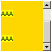
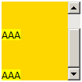
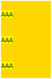

关于 Leading and half-leading （差异半差异） 说明请参照 W3C CSS 2.1 规范 10.8.1 节： http://www.w3.org/TR/CSS21/visudet.html#leading
容器高度被明确设定，容器内容高度仅由行高累加决定的情况下，Safari Chrome 中容器元素的 'overflow' 值为非默认值时，其最后一个内联子元素的半差异高度可能会被忽略。
Safari Chrome 浏览器下 srcollHeight 和 scrollTop 值可能小于其他浏览器。
| Chrome Safari |
|---|
这是 Safari Chrome 浏览器的一个特性，当一个元素的 'overflow' 特性值为非默认值（visible）时， 这个元素下的最后一个内联子元素的行高中的半差异高度部分将被忽略，此时内联元素里的内容将紧贴父元素的下部内边缘。
分析以下代码：
<div style="background:gold;width:100px;overflow-y:scroll;height:100px;line-height:50px;"> <span
style="font-size:12px;font-family:Verdana,宋体;background:yellow">AAA</span><br
/> <span
style="font-size:12px;font-family:Verdana,宋体;background:yellow">AAA</span><br
/> <span
style="font-size:12px;font-family:Verdana,宋体;background:yellow">AAA</span>
</div> <br /> <div style="background:gold;width:100px;line-height:50px;">
<span
style="font-size:12px;font-family:Verdana,宋体;background:yellow">AAA</span><br
/> <span
style="font-size:12px;font-family:Verdana,宋体;background:yellow">AAA</span><br
/> <span
style="font-size:12px;font-family:Verdana,宋体;background:yellow">AAA</span>
</div>
两个 DIV 容器中拥有数量相同的行内元素，每个之间中用 BR 标记换行显示，这些行内元素的显示高度取决于其行框高度，行框高度取决于行内框设置的 'line-height' 属性值。本例中，行高设置远大于字体的实际高度，父容器的实际高度应该是这些行高的累加。
观察实际效果：
| IE6 IE7 IE8 Firefox Opera | Chrome Safari | |
|---|---|---|
| 'overflow:scroll/hidden' |  |  |
| 'overflow:visible' |  |
示例中，'line-height' 值设置远大于 'font-size' 值设置，此时文字会垂直居中显示在行内框中，行内框顶边和底边部分将插入半差异，半差异高度是整体行内框高度的一部分，行框将依照行内框高度和垂直对齐方式计算他自身高度。
对比表格可以看出 Chrome Safari 中最后一行的行高下半部多出字号的部分高度（半差异高度），在容器是 'overflow:scroll'（或者 'hidden'）的设置下没有体现出来，这部分高度被在计算容器内行框实际高度时被忽略了，导致容器整体高度计算失误。
这样就导致了容器的 ScrollHeight 和最大 ScrollTop 值在 IE Firefox Opera 中较大，在 Chrome Safari 中较小。
为了准确得到容器高度，建议避免使用行高为行内元素指定高度，而应改用块标记，并且明确的指定其 'height' 值。
| 操作系统版本: | Windows 7 Ultimate build 7600 |
|---|---|
| 浏览器版本: |
IE6
IE7 IE8 Firefox 3.6 Chrome 5.0.317.2 dev Safari 4.0.4 Opera 10.51 |
| 测试页面: | webkit_line_height_clip.html |
| 本文更新时间: | 2010-07-22 |
overflow inline line-height 溢出 内联元素 行高